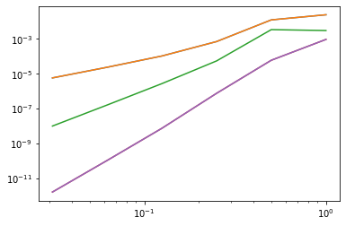
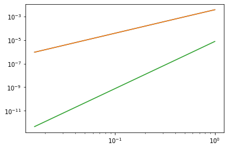
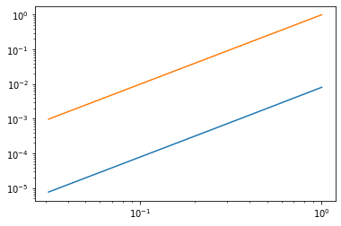

5.4. Integration rules in NGSolve#
from ngsolve import *
from ngsolve.webgui import Draw
In NGSolve an IntegrationRule for finite element meshes is defined on the respective reference element. E.g. for a triangle TRIG the reference element has the vertices \((0,0),(1,0),(0,1)\),
k = 4
intrule = IntegrationRule(TRIG,k) #returns an integration rule of at least order k
print(intrule)
locnr = 0: (0.816848, 0.0915762, 0), weight = 0.0549759
locnr = 1: (0.0915762, 0.816848, 0), weight = 0.0549759
locnr = 2: (0.0915762, 0.0915762, 0), weight = 0.0549759
locnr = 3: (0.108103, 0.445948, 0), weight = 0.111691
locnr = 4: (0.445948, 0.108103, 0), weight = 0.111691
locnr = 5: (0.445948, 0.445948, 0), weight = 0.111691
An IntegrationRule consists of IntegrationPoints which have a position and a weight:
import matplotlib.pyplot as pl
pl.plot([0,1,0,0],[0,0,1,0])
for ip in intrule:
print("point: ", ip.point)
print("weight: ", ip.weight)
pl.plot(ip.point[0],ip.point[1],'x')
point: (0.816847572980459, 0.091576213509771, 0.0)
weight: 0.054975871827661
point: (0.091576213509771, 0.816847572980459, 0.0)
weight: 0.054975871827661
point: (0.091576213509771, 0.091576213509771, 0.0)
weight: 0.054975871827661
point: (0.10810301816807, 0.445948490915965, 0.0)
weight: 0.111690794839005
point: (0.445948490915965, 0.10810301816807, 0.0)
weight: 0.111690794839005
point: (0.445948490915965, 0.445948490915965, 0.0)
weight: 0.111690794839005
We may check the accuracy of the integration rule by using IntegrationRule.Integrate(f) for a lambda function f on the reference element.
intrule = IntegrationRule(TRIG, 5)
for i in range(10):
intrule_ref = IntegrationRule(TRIG,i+2)
int_ref = intrule_ref.Integrate(lambda x,y: x**i)
int_approx = intrule.Integrate(lambda x,y: x**i)
print("Polynomial of order {}: error = {}".format(i, abs(int_ref-int_approx)))
Polynomial of order 0: error = 1.942890293094024e-15
Polynomial of order 1: error = 8.326672684688674e-17
Polynomial of order 2: error = 1.249000902703301e-16
Polynomial of order 3: error = 0.0
Polynomial of order 4: error = 0.0
Polynomial of order 5: error = 4.961309141293668e-16
Polynomial of order 6: error = 1.5855372570428017e-15
Polynomial of order 7: error = 2.750544061753263e-06
Polynomial of order 8: error = 4.881966328910969e-06
Polynomial of order 9: error = 7.801460834254426e-07
Integration over a finite element Mesh can be done by supplying the integration rule(s) (if more than one type of element is present in the mesh)
mesh = Mesh(unit_square.GenerateMesh(maxh=0.2))
Draw(mesh)
print(Integrate(sin(6*pi*x)*sin(10*pi*y)*dx(intrules = {TRIG: IntegrationRule(TRIG,0)}),mesh))
-0.024473463317593043
For mesh refinement we should observe convergence:
import numpy as np
mesh = Mesh(unit_square.GenerateMesh(maxh=0.2))
intorders = [0,1,2,3,4]
refinements = 6
errors = np.zeros((refinements,len(intorders)))
hs = np.ones((refinements,len(intorders)))
for i in range(refinements):
print("refinement: ", i)
for j in range(len(intorders)):
print("order = {}".format(intorders[j]))
intrules = {TRIG: IntegrationRule(TRIG, intorders[j])}
integral = abs(Integrate(sin(6*pi*x)*sin(10*pi*y)*dx(intrules = intrules),mesh))
errors[i,j]=integral
hs[i,j]=1/2**i
mesh.Refine()
refinement: 0
order = 0
order = 1
order = 2
order = 3
order = 4
refinement: 1
order = 0
order = 1
order = 2
order = 3
order = 4
refinement: 2
order = 0
order = 1
order = 2
order = 3
order = 4
refinement: 3
order = 0
order = 1
order = 2
order = 3
order = 4
refinement: 4
order = 0
order = 1
order = 2
order = 3
order = 4
refinement: 5
order = 0
order = 1
order = 2
order = 3
order = 4
pl.loglog(hs,errors);

For mixed meshes we also need an integration rule for quads:
from netgen.occ import *
geo = OCCGeometry(Rectangle(1,1).Face()-MoveTo(0.3,0.3).Rectangle(0.2,0.2).Face(),dim=2)
mesh = Mesh(geo.GenerateMesh(maxh=0.3,quad_dominated=True))
Draw(mesh)
intorders = [0,1,2]
refinements = 7
errors = np.zeros((refinements,len(intorders)))
hs = np.ones((refinements,len(intorders)))
intrules_ref = {TRIG: IntegrationRule(TRIG, 20), QUAD:IntegrationRule(QUAD,20)}
integral_ref = Integrate(sin(x)*sin(y)*dx(intrules = intrules_ref),mesh)
for i in range(refinements):
print("refinement: ", i)
for j in range(len(intorders)):
print("order = {}".format(intorders[j]))
intrules = {TRIG: IntegrationRule(TRIG, intorders[j]),QUAD: IntegrationRule(QUAD, intorders[j])}
integral = Integrate(sin(x)*sin(y)*dx(intrules = intrules),mesh)
errors[i,j] = abs(integral-integral_ref)
hs[i,j]=1/2**i
mesh.Refine()
refinement: 0
order = 0
order = 1
order = 2
refinement: 1
order = 0
order = 1
order = 2
refinement: 2
order = 0
order = 1
order = 2
refinement: 3
order = 0
order = 1
order = 2
refinement: 4
order = 0
order = 1
order = 2
refinement: 5
order = 0
order = 1
order = 2
refinement: 6
order = 0
order = 1
order = 2
pl.loglog(hs,errors);

One may also create an own integration rule:
my_intrule_trig = IntegrationRule([(0,0),(1,0),(0,1)],[1/6,1/6,1/6])
my_intrule_quad = IntegrationRule([(0,0),(1,0),(0,1),(1,1)],[1/4,1/4,1/4,1/4])
geo = OCCGeometry(Rectangle(1,1).Face()-MoveTo(0.3,0.3).Rectangle(0.2,0.2).Face(),dim=2)
mesh = Mesh(geo.GenerateMesh(maxh=0.3,quad_dominated=True))
Draw(mesh)
intrules_ref = {TRIG: IntegrationRule(TRIG, 20), QUAD:IntegrationRule(QUAD,20)}
integral_ref = Integrate(sin(x)*sin(y)*dx(intrules = intrules_ref),mesh)
refinements = 6
errors = []
hs = []
for i in range(refinements):
intrules = {TRIG: my_intrule_trig,QUAD: my_intrule_quad}
integral = Integrate(sin(x)*sin(y)*dx(intrules = intrules),mesh)
errors.append(abs(integral-integral_ref))
hs.append(1/2**i)
mesh.Refine()
pl.loglog(hs,errors);
pl.loglog(hs,[h**2 for h in hs]);
